2023年北京市中考物理试题 原卷解析
2023年北京市初中学业水平考试
物理试卷
第一部分
一、单项选择题（下列每题均有四个选项，其中只有一个选项符合题意。共24分，每题2分）
1. 下列物品通常情况下属于导体的是（ ）
A. 纸杯B. 瓷碗C. 铁锅D. 木铲
【答案】C
【解析】
【详解】纸杯、瓷碗、木铲都不容易导电，是绝缘体；铁锅容易导电，是导体，故C符合题意，ABD不符合题意。
故选C。
2. 如图所示的光现象，由于光的反射形成的是（ ）
A.  桥在水中形成倒影
桥在水中形成倒影
B.  墙上呈现人的影子
墙上呈现人的影子
C.  筷子好像在水面处弯折
筷子好像在水面处弯折
D.  放大镜把字放大
放大镜把字放大
【答案】A
【解析】
【详解】A．桥在水中形成倒影，属于平面镜成像现象，是由光的反射形成的，故A符合题意；
B．墙上呈现人的影子，是由于光的直线传播形成的，故B不符合题意；
C．筷子好像在水面处弯折，是由于光的折射形成的，故C不符合题意；
D．放大镜是凸透镜，凸透镜成像成像是由光 折射形成的，故D不符合题意。
折射形成的，故D不符合题意。
故选A。
3. 如图所示的实例，目的是为了减小摩擦的是（ ）
A.  轮滑鞋装有滚轮B.
轮滑鞋装有滚轮B.  运动鞋底有凹凸的花纹
运动鞋底有凹凸的花纹
C.  脚蹬面做得凹凸不平D.
脚蹬面做得凹凸不平D.  守门员戴着防滑手套
守门员戴着防滑手套
【答案】A
【解析】
【详解】A．轮滑鞋装有滚轮，用滚动代替滑动，减小了摩擦，故A符合题意；
B．运动鞋底有凹凸的花纹，使鞋底与地面间变得更粗糙，增大了摩擦力，故B不符合题意；
C．脚蹬面做得凹凸不平，使鞋底与踏板间变得更粗糙，增大了摩擦力，故C不符合题意；
D．守门员戴着防滑手套，使手与足球之间变得更粗糙，增大了摩擦力，故D不符合题意。
故选A。
4. 2023年5月30日，搭载神舟十六号载人飞船的长征二号F遥十六运载火箭，在酒泉卫星发射中心成功发射。图中所示的是火箭上升和此过程中航天员在舱内的情境，下列说法正确的是（ ）

A. 以地面为参照物，发射塔是运动的
B. 以发射塔为参照物，火箭是静止的
C. 以舱内的航天员为参照物，火箭是静止的
D. 以舱内的航天员为参照物，发射塔是静止的
【答案】C
【解析】
【详解】A．以地面为参照物，发射塔的位置不变，是静止的，故A错误；
B．以发射塔为参照物，火箭的位置不断变化，是运动的，故B错误；
C．以舱内的航天员为参照物，火箭位置不变，是静止的，故C正确；
D．以舱内的航天员为参照物，发射塔位置不断变化，是运动的，故D错误。
故选C。
5. 将某种金属制成的勺放入15℃的水中，金属勺没有熔化；将该金属勺放入45℃的水中，发现金属勺逐渐熔化。该金属的熔点可能是（ ）
A. 10℃B. 30℃C. 50℃D. 60℃
【答案】B
【解析】
【详解】金属属于晶体，其温度达到熔点并且继续吸热时，金属就会融化。根据题目表述此金属的熔点在15℃到45℃之间，故B符合题意，ACD不符合题意。
故选B。
6. 如图所示，在试管内装适量水，用橡胶塞塞住管口，将水加热一段时间后，橡胶塞被推出，管口出现大量“白气”。下列说法正确的是（ ）

A. 管口出现的“白气”是水蒸气
B. 水蒸气推出橡胶塞导致水蒸气内能增加
C. 水被加热的过程中，其内能是通过做功的方式改变的
D. 水蒸气推出橡胶塞的过程中，橡胶塞的动能是由水蒸气的内能转化来的
【答案】D
【解析】
【详解】A．管口出现的“白气”是水蒸气液化成的小水滴，故A错误；
BD．水蒸气推出橡胶塞，水蒸气的内能转化为橡胶塞的机械能，水蒸气内能减小，故B错误，D正确；
C．水被火焰加热的过程中，其内能是通过热传递的方式改变的，故C错误。
故选D。
7. 如图所示，小京用水平推力推着购物车在水平地面上做匀速直线运动，下列说法正确的是（ ）

A. 小京对车的水平推力大于车受到的阻力
B. 车受到的支持力与车对地面的压力是一对平衡力
C. 若小京撤去对车的水平推力，车的运动状态将会发生改变
D. 若小京撤去对车的水平推力，小京仍对车做功
【答案】C
【解析】
【详解】A．购物车在水平地面上做匀速直线运动，购物车处于平衡状态。水平推力和阻力是二力平衡关系，应该相等，故A错误；
B．车受到的支持力受力物体是车，车对地面的压力受力物体时是地面，受力物体不同，所以它们不是一对平衡力，故B错误；
C．若小京撤去对车的水平推力，车在阻力作用下会慢慢停下，运动状态发生了改变，故C正确；
D．若小京撤去对车的水平推力，对车没有的力的作用，不再对车做功，故D错误。
故选C。
8. 一束单色光从空气斜射入水中的情境如图所示。下列说法正确的是（ ）

A. BO是入射光，OA是反射光
B. AO是入射光，OC是折射光
C. ∠AOM是入射角，∠BON是反射角
D. 光若沿CO入射，将沿OA和OB射出
【答案】B
【解析】
【详解】ABC．如图：过点O作法线PQ，由于反射时反射光线和入射光线位于法线两侧；折射时折射光线和入射光线也位于法线两侧，所以图中AO是入射光线、OB是反射光线、OC是折射光线。∠AOP是入射角，∠BOP是反射角，故B正确，AC错误；

D．折射时光路是可逆的，所以光若沿CO入射，将沿OA射出，故D错误。
故选B。
9. 如图所示，人们修筑拦河坝来提高上游的水位，在坝底安装水轮机带动发电机发电。上游一定量的水，经水轮机流到下游的过程中，下列说法正确的是（ ）

A. 水机械能不变
B. 水的重力势能增大，动能减小
C. 水轮机带动发电机发电，电能转化成机械能
D. 上游水位越高，能够发出的电能越多
【答案】D
【解析】
【详解】AC．上游一定量的水，经水轮机流到下游的过程中，在水轮机处带动发电机发电。将水的机械能转化为电能，因此水的机械能减小，故AC错误；
B．上游一定量的水，经水轮机流到下游的过程中，水的质量不变，高度降低，重力势能减小，转化为水的动能，则水的动能增加，故B错误；
D．水电站发电时，上、下水位差越大，水的重力势能越大，能够转化的动能就越多，带动水轮机发出的电能就越多，故D正确。
故选D。
10. 用如图所示装置提升重为800N的物体A，动滑轮重为200N。在卷扬机对绳子的拉力F作用下，物体A在10s内竖直匀速上升了2m。在此过程中，不计绳重和摩擦，下列说法正确的是（ ）

A. 物体A上升的速度为0.4m/sB. 滑轮组的有用功为2000J
C. 拉力F的功率为100WD. 滑轮组的机械效率为80%
【答案】D
【解析】
【详解】A．物体A在10s内竖直匀速上升了2m，上升的速度为

故A错误；
B．装置提升重为800N的物体A，竖直匀速上升了2m，滑轮组的有用功为

故B错误；
C．由图知，n=2，不计绳重和轮与轴间的摩擦，拉力为

拉力端移动距离为

拉力做的总功

拉力做功的功率

故C错误；
D．滑轮组的机械效率为

故D正确。
故选D。
11. 如图是两个定值电阻R1、R2的内部结构图，R1、R2所用电阻丝（涂有绝缘漆）粗细均匀、材料相同，分别缠绕在相同的圆柱形绝缘棒上，圈数分别为43圈和33圈，R1的电阻丝比R2的电阻丝细。将R1、R2并联在电路中工作一段时间，下列说法正确的是（ ）
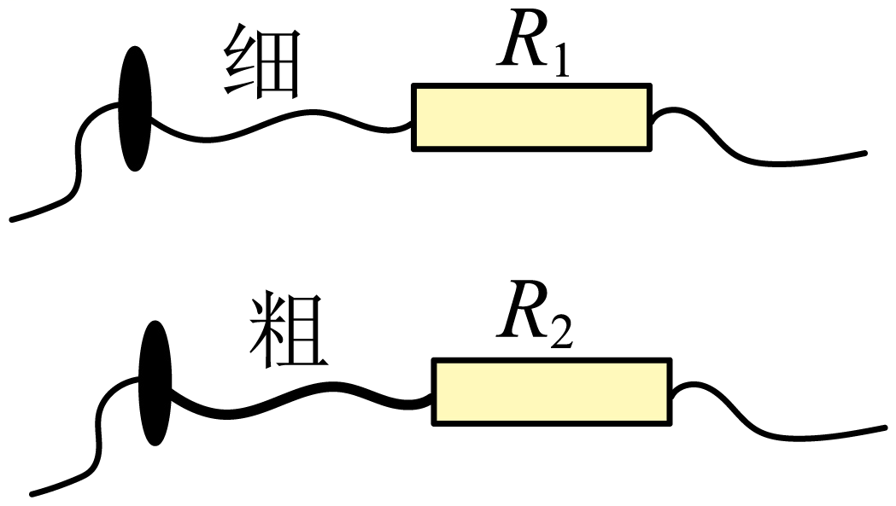
A. 通过R1的电流等于通过R2的电流
B. R1两端的电压大于R2两端的电压
C. R1的电功率大于R2的电功率
D. R1消耗的电能小于R2消耗的电能
【答案】D
【解析】
【详解】由题意可知，两电阻丝的材料相同，电阻丝R1比R2长且细，则R1>R2；
AB．因R1与R2并联，电阻两端的电压相等，由
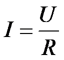
可知，电阻大的通过的电流小，所以通过R1的电流小于通过R2的电流，故AB错误；C．由
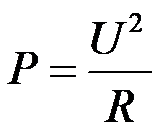
可知，R1电功率小于R2的电功率，故C错误；
D．R1电功率小于R2的电功率，根据W=Pt可知，相同时间内R1消耗的电能小于R2消耗的电能，故D正确。
故选D。
12. 如图是小强利用器械进行锻炼的示意图，其中横杆AB可绕固定点O在竖直平面内转动，OA∶OB=3∶2，在杆A端用细绳悬挂重为300N的配重，他在B端施加竖直方向的力F1，杆AB在水平位置平衡，此时他对水平地面的压力为F2。为了锻炼不同位置的肌肉力量，他将固定点移动到A端，杆AB可绕端点A在竖直平面内转动，配重悬挂在O点，在B端施加竖直方向的力使杆AB在水平位置再次平衡，此时，他对水平地面的压力为F3，压强为p。已知小强重为650N，两只脚与地面接触的总面积为400cm²，不计杆重与绳重，下列判断正确的是（ ）
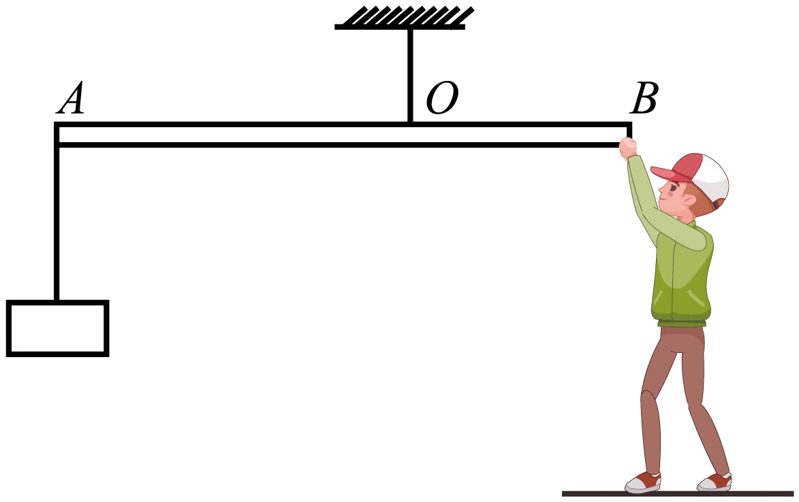
A. F1为200NB. F2为1100N
C. F3为830ND. p为11750Pa
【答案】C
【解析】
【详解】A．已知OA∶OB=3∶2，根据杠杆平衡条件F1l1=F2l2得
F1 ×OB =G×OA
即
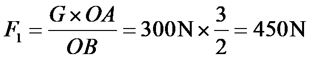
故A错误；
B．他对水平地面的压力为
F2=G人- F1=650N -450N =200N
故B错误；
C．将固定点移动到A端，杆AB可绕端点A在竖直平面内转动，配重悬挂在O点，在B端施加竖直方向的力，使杆AB在水平位置再次平衡，小强对B端施加力的方向应竖直向上，该力大小
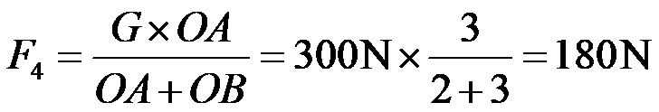
根据力的作用是相互的，则此时B端对小强施加力的方向竖直向下，该力大小
F4ʹ= F4=180N
他对水平地面的压力
F3=G人+ F4 ʹ =650N+180N =830N
故C正确；
D．此时他对水平地面的压强
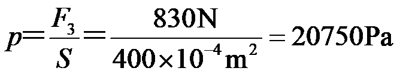
故D错误。
故选C。
二、多项选择题（下列每题均有四个选项，其中符合题意的选项均多于一个。共6分，每题2分。每题选项全选对的得2分，选对但不全的得1分，有错选的不得分）
13. 下列说法正确的是（ ）
A. 运动的小球具有机械能，而不具有内能
B. 铁块很难被压缩，说明分子间只存在斥力
C. 汽油机的压缩冲程中，活塞压缩气体，将机械能转化为内能
D. 内陆地区比沿海地区昼夜温差大，原因之一是砂石的比热容比水的比热容小
【答案】CD
【解析】
【详解】A．任何物体在任何情况下都具有内能，故A错误；
B．铁块分子间既有引力也有斥力，很难被压缩，是因为压缩时斥力大于引力，总的表现为斥力，故B错误；
C．汽油机的压缩冲程中，两气门关闭，活塞压缩气体，对气体做功，气体温度升高，机械能转化为内能，故C正确；
D．沿海地区和内陆地区相比，沿海地区水多，水的比热容大，在相同的吸放热条件下，水的温度变化小，昼夜温差小，故D正确。
故选CD。
14. 小京洗水果时，发现体积较小的桔子漂浮在水面上，而体积较大的芒果却沉在水底，如图所示。下列说法正确的是（ ）
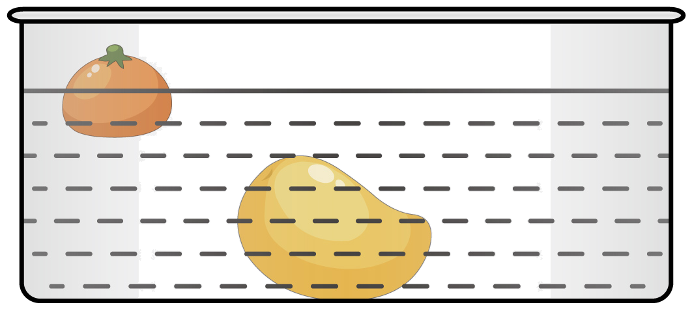
A. 桔子的密度小于芒果的密度
B. 桔子受到的浮力大于它受到的重力
C. 桔子受到的重力小于芒果受到的重力
D. 桔子受到的浮力大于芒果受到的浮力
【答案】AC
【解析】
【详解】依题意得，体积较小的桔子漂浮在水面上，而体积较大的芒果却沉在水底。
A．由浮沉条件得，桔子的密度小于水的密度，芒果的密度大于水的密度，因此桔子的密度小于芒果的密度，故A正确；
B．桔子受到的浮力等于它受到的重力，故B错误；
CD．桔子体积小于芒果体积，桔子排开水的体积小于桔子的体积，芒果排开水的体积等于芒果的体积，则桔子排开水的体积小于芒果排开水的体积，由
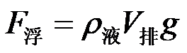
得，桔子受到的浮力小于芒果受到的浮力，桔子受到的浮力等于它受到的重力，芒果受到的浮力小于它受到的重力，则桔子受到的重力小于芒果受到的重力，故C正确，D错误。故选AC。
15. 如图所示，是小京设计的汽车油箱内油量不足时触发报警的电路，电源两端电压保持不变，电阻R1、R2中的一个是定值电阻，另一个是压敏电阻。压敏电阻装在油箱内底部，其阻值随油箱中油量的减少而增大，当电压表示数大于某一值U时，就会触发报警。电压表示数为U时，油箱中的油量为警戒油量。下列说法正确的是（ ）
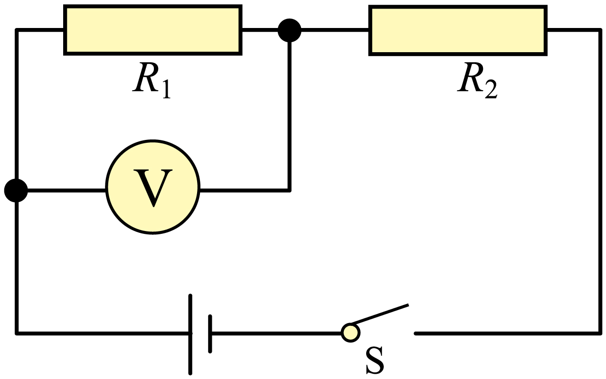
A. R1为压敏电阻
B. 随着油箱的油量减少，通过定值电阻的电流变大
C. 若换用阻值更大的定值电阻，警戒油量将变小
D. 若换用电压更大的电源，警戒油量将变大
【答案】ACD
【解析】
【详解】A．依题意得，当邮箱中的油量不足时，电压表示数会大于某一值U时，就会触发报警。由图得，两电阻串联，电压表测量电阻R1的电压。依题意得，压敏电阻的阻值随油箱中油量的减少而增大，由串联电路电压特点得，随着油量减小，压敏电阻的电压增大，定值电阻电压减小，因此与电压表并联的电阻时压敏电阻，故A正确；
B．随着油箱的油量减少，电路中的总电阻变大，电路中电流减小，则通过定值电阻的电流变小，故B错误；
C．若换用阻值更大的定值电阻，触发警报时，电路中电流更小，压敏电阻的阻值更大，警戒油量将变小，故C正确；
D．若换用电压更大的电源，触发警报时，定值电阻两端的电压增大，电路中电流增大，压敏电阻的阻值减小，警戒油量将变大，故D正确。
故选ACD。
第二部分
三、实验探究题（共28分，16、17、18、21题各4分，19、20、22、23题各3分）
16. 如图所示的弹簧测力计的示数是_N。
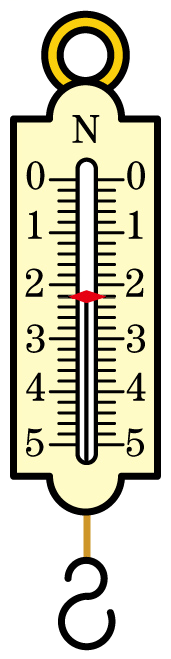
【答案】2.2
【解析】
【详解】由图可知，弹簧测力计的每个大格分5份，分度值为0.2N，所以弹簧测力计的示数为2.2N。
17. 条形磁体周围的磁场情况如图所示，则条形磁体的左端是________极。
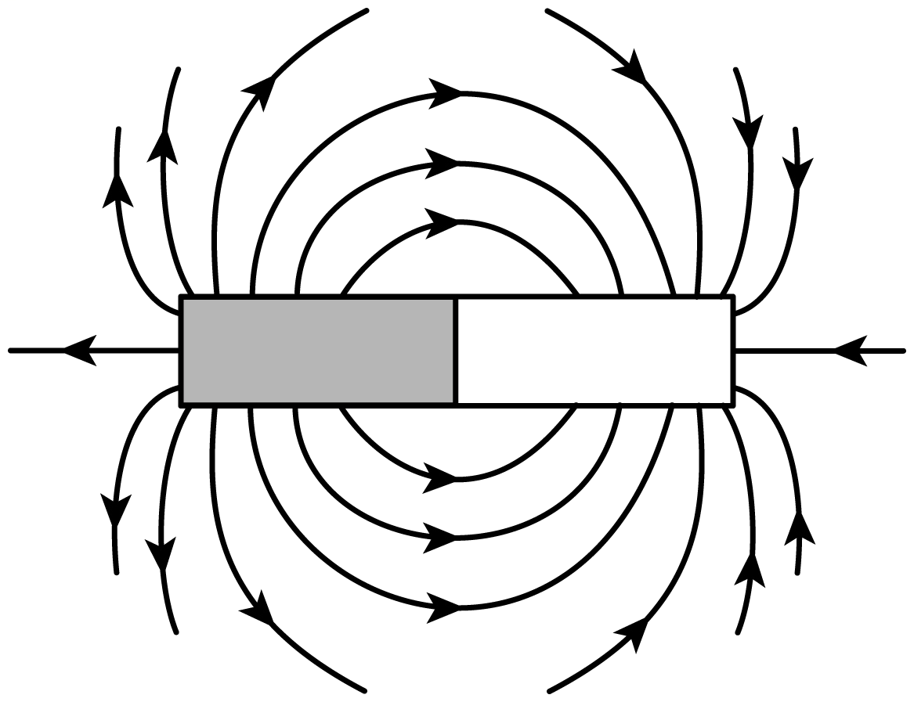
【答案】N
【解析】
【详解】条形磁体周围的磁场是从N极出发，回到S极，所以条形磁体的左端是N极。
18. 小强在小瓶里装满带颜色的水，在橡皮塞上插进一根细玻璃管，使橡皮塞塞住瓶口，这就做了一个简易温度计，如图甲所示。小强将简易温度计分别放入温度不同的水中，观察到细管中液面的位置如图乙、丙所示，则图________所反映的是放入温度较低的水中的情况。
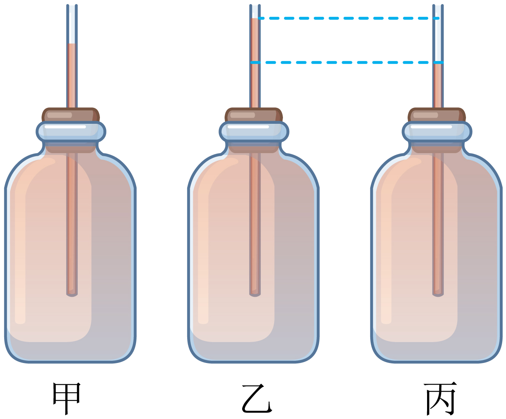
【答案】丙
【解析】
【详解】小强自制的简易温度计是利用小瓶内水的热胀冷缩的规律工作的。当将此温度计放入温度较低的水中时，小瓶中的水因受冷而收缩，细管中的水柱下降，则细管中的液面比甲低，故图丙是放入温度较低的水中的情况。
19. 如图所示，两个相同瓶子的瓶口相对，之间用一块玻璃板隔开，上面的瓶中装有空气，下面的瓶中装有密度比空气大的红棕色二氧化氮气体。抽掉玻璃板后，可以看到：________，这属于扩散现象。
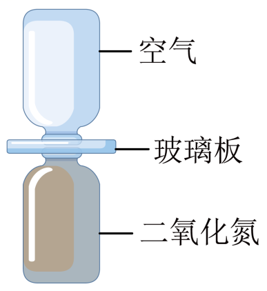
【答案】两个瓶子内的气体逐渐混合，颜色变得均匀
【解析】
【详解】分子永不停息地做无规则运动，抽掉玻璃板后，可以看到：两个瓶子内的气体逐渐混合，颜色变得均匀。
20. （1）小京用图甲所示的装置进行实验，闭合开关的瞬间，观察到小磁针______的现象，说明电流周围存在磁场；
（2）小京用图乙所示的装置进行实验，其中灵敏电流计指针偏转的方向可以反映电路中的电流方向。使金属棒ab向左做切割磁感线运动，灵敏电流计指针向右偏转，如图乙所示；保持磁场方向不变，使金属棒ab向右做切割磁感线运动，灵敏电流计指针向左偏转，如图丙所示。小京探究的问题是：______。
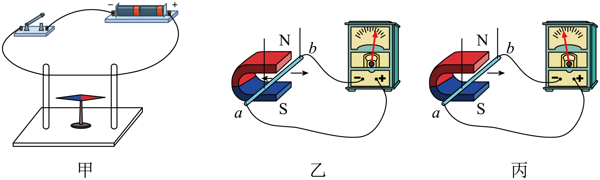
【答案】 ①. 发生偏转 ②. 感应电流的方向与金属棒切割磁感线运动的方向是否有关
【解析】
【详解】（1）[1]如图，闭合开关的瞬间，导线中有电流通过，由于通电导线周围存在磁场，小磁针受到电流的磁场作用而发生偏转。
（2）[2]保持磁场方向不变，改变导体切割磁感线的方向，灵敏电流计指针偏转方向也发生改变，说明感应电流方向发生改变，所以小京探究的问题是感应电流的方向与金属棒切割磁感线运动的方向是否有关。
21. 小强用天平和量筒测量土豆的密度，由于土豆太大，不能放入量筒中，他将土豆切下来一小块进行实验。
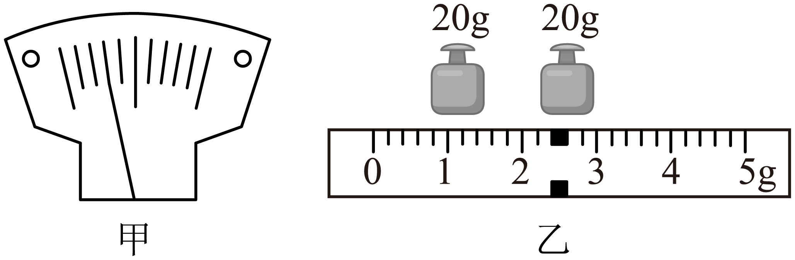
（1）将天平放在水平台面上，游码归零后，发现指针指示的位置如图甲所示，将平衡螺母向______端移动，使横梁水平平衡；
（2）将土豆放在天平的左盘，当右盘中砝码的质量和游码在标尺上的位置如图乙所示时，横梁再次水平平衡，土豆的质量为______g；
（3）用量筒测出土豆的体积为40cm3；
（4）该土豆的密度为______g/cm³。
【答案】 ①. 右 ②. 42.4 ③. 1.06
【解析】
【详解】（1）[1]将天平放在水平台面上，游码归零后，由图甲可知，指针偏向分度盘中线的左侧，应将平衡螺母向右调节，使天平在水平位置平衡。
（2）[2]由图乙可知，砝码的总质量为
20g+20g=40g
标尺的分度值为0.2g，读数为2.4g，则土豆的质量为
40g+2.4g=42.4g
（4）[3]该土豆的密度为
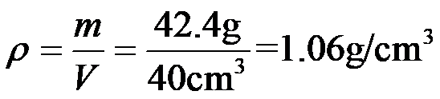
22. 小京利用同一个微小压强计等器材探究液体内部的压强与液体的深度、液体的密度是否有关，进行了如甲、乙、丙图所示的实验。
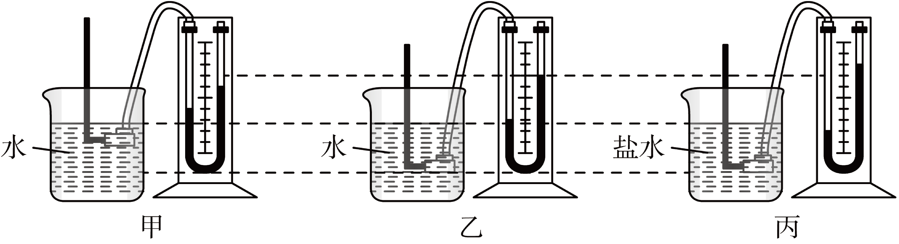
（1）实验中液体内部的压强是通过微小压强计________反映；
（2）甲、乙两图所示的实验说明液体内部的压强与________有关；乙、丙两图所示的实验说明液体内部的压强与________有关。
【答案】 ①. U形管两侧液柱高度差 ②. 液体深度 ③. 液体密度
【解析】
【详解】（1）[1]微小压强计工作原理是当“U”型管左侧压强大于右侧时，左侧液面下降，右侧液面上升，两液面高度差越大，压强也越大。
（2）[2]甲、乙两图比较，水浅的地方压强小，水深的地方压强大，说明液体内部的压强与深度有关；
[3]乙、丙两图比较，在同一深度，水的密度小，压强小，盐水密度大，压强大，说明液体内部的压强与液体密度有关。
23. 小京用如图所示的电路探究电流通过导体产生的热量与导体的电阻是否有关，其中两个烧瓶完全相同，瓶内装有质量和初温相同的煤油、相同的温度计A和B、阻值不等的电阻丝R1和R2。
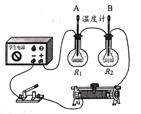
（1）该实验采用串联电路可以控制________相同和________相同；
（2）闭合开关一段时间，两支温度计示数的变化量不相等，实验结论是：________。
【答案】 ①. 电流 ②. 通电时间 ③. 电流通过导体产生的热量与导体的电阻有关
【解析】
【详解】（1）[1][2]该实验采用串联电路，两电阻丝电流与通电时间相同。
（2）[3]闭合开关一段时间，两支温度计示数的变化量不相等，说明当电流与通电时间相同时，不同电阻的电阻丝产生的热量不同，可得电流通过导体产生的热量与导体的电阻有关。
24. 在探究凸透镜所成实像的高度与物距、焦距的关系时，三个小组的同学用高度相同的发光体以及焦距不同的凸透镜等器材进行了实验，部分实验数据如表中所示。
表1（f₁=5cm）
物距u/cm | 像高h/cm |
11 | 5 |
17 | 2.5 |
40 | 0.9 |
表2（f₂=8cm）
物距u/cm | 像高h/cm |
24 | 3 |
36 | 1.7 |
40 | 1.5 |
表3（f₃=10cm）
（1）由表中数据可知：物体高度、凸透镜焦距一定时，物距变大，所成实像高度的变化情况是：________；物体高度、物距一定时，凸透镜焦距变大，所成实像的高度变化情况是：________。
（2）讲台上有一发光体，同学们利用凸透镜和光屏观察发光体在各自光屏上所成的像，小京所用凸透镜离发光体较近，小强所用凸透镜离发光体较远，发现两人光屏上呈现的像的高度相等，则小京所用凸透镜的焦距________小强所用凸透镜的焦距。（选填“大于”“等于”或“小于”）
【答案】 ①. 变小 ②. 变大 ③. 小于
【解析】
【详解】（1）[1]表1中，凸透镜焦距不变f₁=5cm，物距11cm、17cm、40cm不断增大，像高5cm、2.5cm、0.9cm逐渐减小；同理表2中、表3中也可看出物体高度、凸透镜焦距一定时，物距变大，所成实像高度变小；
[2]观察三个表中的最后一项，凸透镜焦距变大5cm、8cm、10cm，物距不变都是40cm，像高变大0.9cm、1.5cm、2cm。
（2）[3]同一个物体，两个凸透镜所成像的高度相等，离物体近的透镜对光的折射能力强，焦距短，所以小京所用凸透镜的焦距小于小强所用凸透镜的焦距。
25. 小京在复习时，用两端电压不变的电源及其他器材再次做了如图所示的实验。她将电阻丝R1、R2先后分别接入电路中的a、b两端，闭合开关后，观察到接入R2时，小灯泡的亮度更亮，电流表的示数更大。已知灯泡亮度变亮时，灯丝电阻变大。请分析并判断R1与R2阻值的大小关系。（可画电路图辅助说明）
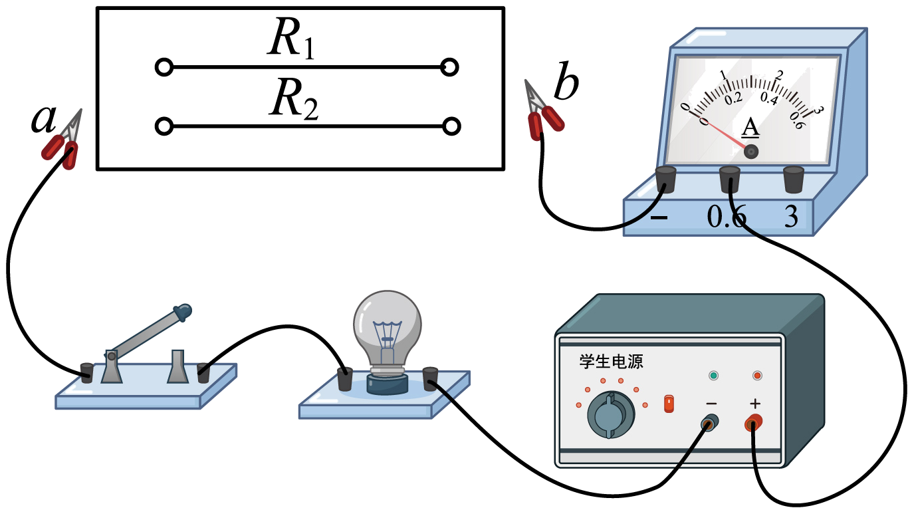
【答案】
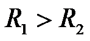
【解析】
【详解】R1、R2分别接入电路中，等效电路如图甲、乙所示：
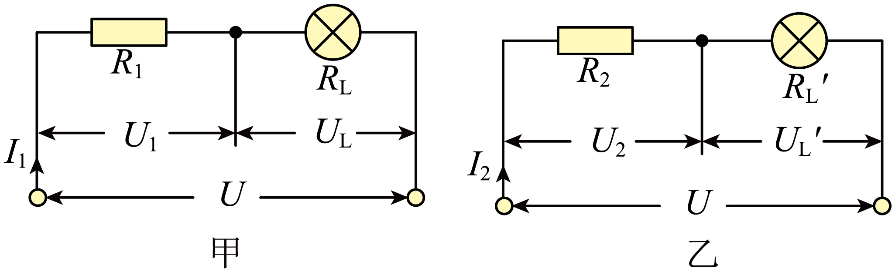
电源电压U不变，电流I1<I2，灯丝电阻RL<RL'。依据欧姆定律UL=I1RL，UL'=I2RL'，可知UL<UL'。依据串联电路的电压关系，R1、R2两端电压分别
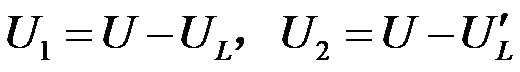
，可知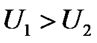
。依据公式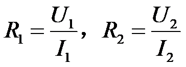
，可知。四、科普阅读题（共4分）
26. 请阅读《云中探秘问苍穹》并回答题。
云中探秘问苍穹
苍茫云海、万里层云中蕴藏着丰富的水资源，水的降落滋润着地球万物。降水量的多少和降水在时间与空间的分布极大地影响着人们的生活。在一定时段内，从云中降落到地面上的液态或固态降水，在无渗透、蒸发、流失情况下积聚的水层深度，称为该地该时段内的降水量，单位为毫米（mm）。
如何预测某个区域的降水量呢？如果能获得该区域正上方云层所含降水粒子（云中的小水滴或小冰晶）所能形成的水的总体积，再结合其他信息估测能够降落到地面的降水粒子占总降水粒子的比例，利用体积和该区域面积之间的关系，就可以得到降水量了。
精准预报降水是一个世界难题，我国在轨气象卫星家族中的新成员——风云三号G星（如图所示）的出现，向解决这一难题迈出了一大步。风云三号G星搭载了我国首套“空中雨量计”——星载KU、KA双频主动降水测量雷达，通过向大气发射无线电磁波信号，接收大气中不同高度层的降水粒子反射信号，获取竖直方向不同高度层的降水结构信息；同时，利用雷达跨轨方向的扫描，实现对水平方向的降水探测。这就如同对大气降水进行“CT”扫描，最终使风云三号G星自上而下地获取云层的三维结构信息，如云层厚度、云层中不同位置降水粒子的数密度（即单位体积内降水粒子的数量）以及各种降水粒子的直径大小等。
风云三号G星云中探秘、叩问苍穹，助力我国在探索浩瀚宇宙征程上，跑出加速度。
请根据上述材料，回答下列问题：
（1）风云三号G星搭载了我国首套________，即星载KU、KA双频主动降水测量雷达。
（2）降水粒子的数密度越大，则1m3内降水粒子的________越大。
A．质量 B．体积 C．数量
（3）假设探测到某云层的平均厚度为1000m，内部的降水粒子（可视为小水滴）分布均匀，数密度为6.25×109个/m3，每个降水粒子的体积均为4×10-15m³。若在12小时内，该云层中有80%的降水粒子以雨滴形式竖直降落到地面上。该云层对应区域的平均降水量为____mm。根据我国气象部门规定的各类雨的降水量标准（见表），可知此次降雨的种类为____。
表各类雨的降水量标准
种类 | 12小时降水量（mm） |
小雨 | 小于5.0 |
中雨 | 5.0~14.9 |
大雨 | 15.0~29.9 |
暴雨 | 30.0~69.9 |
大暴雨 | 70.0~139.9 |
特大暴雨 | 140.0以上 |
【答案】 ①. 空中雨量计 ②. C ③. 20 ④. 大雨
【解析】
【详解】（1）[1]由文中信息可知，风云三号G星搭载了我国首套空中雨量计，即星载KU、KA双频主动降水测量雷达，通过向大气发射无线电磁波信号，接收大气中不同高度层的降水粒子反射信号，获取竖直方向不同高度层的降水结构信息。
（2）[2] 降水粒子的数密度即单位体积内降水粒子的数量，所以降水粒子的数密度越大，则1m3内降水粒子的数量越大。
故选C。
（3）[3]设云层面积为S，则该云层的体积为1000m×S，内部的降水粒子数为1000m×S×6.25×109个/m3，降水粒子的体积为1000m×S×6.25×109个/m3×4×10-15m³，降落到地面上的降水粒子的体积为1000m×S×6.25×109个/m3×4×10-15m³×80%，该云层对应区域的平均降水量为
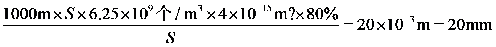
[4]根据我国气象部门规定的各类雨的降水量标准，可知此次降雨的种类为大雨。
五、计算题（共8分，25、26题各4分）
27. 小京利用图甲所示电路获取了额定电压为2.5V的小灯泡L在不同电压下的电流，并利用所测的数据绘制出电流I随其两端电压U变化的图像，如图乙所示。
（1）画出实物电路所对应的电路图；
（2）求小灯泡两端电压为1.0V时的电阻；
（3）求小灯泡正常发光时的电功率。
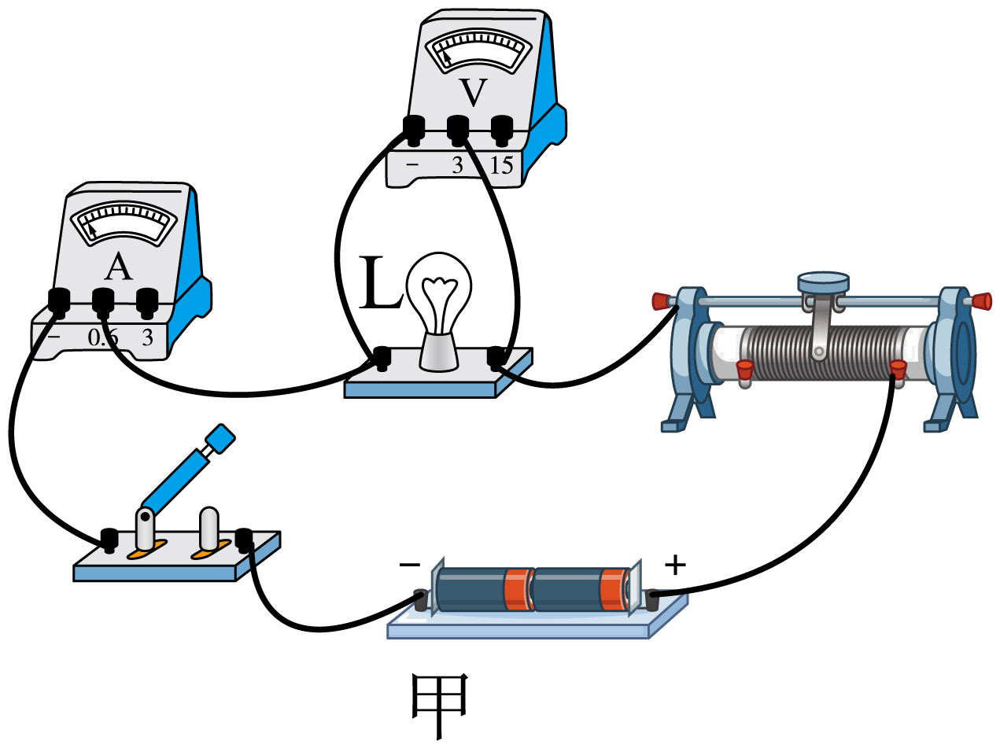
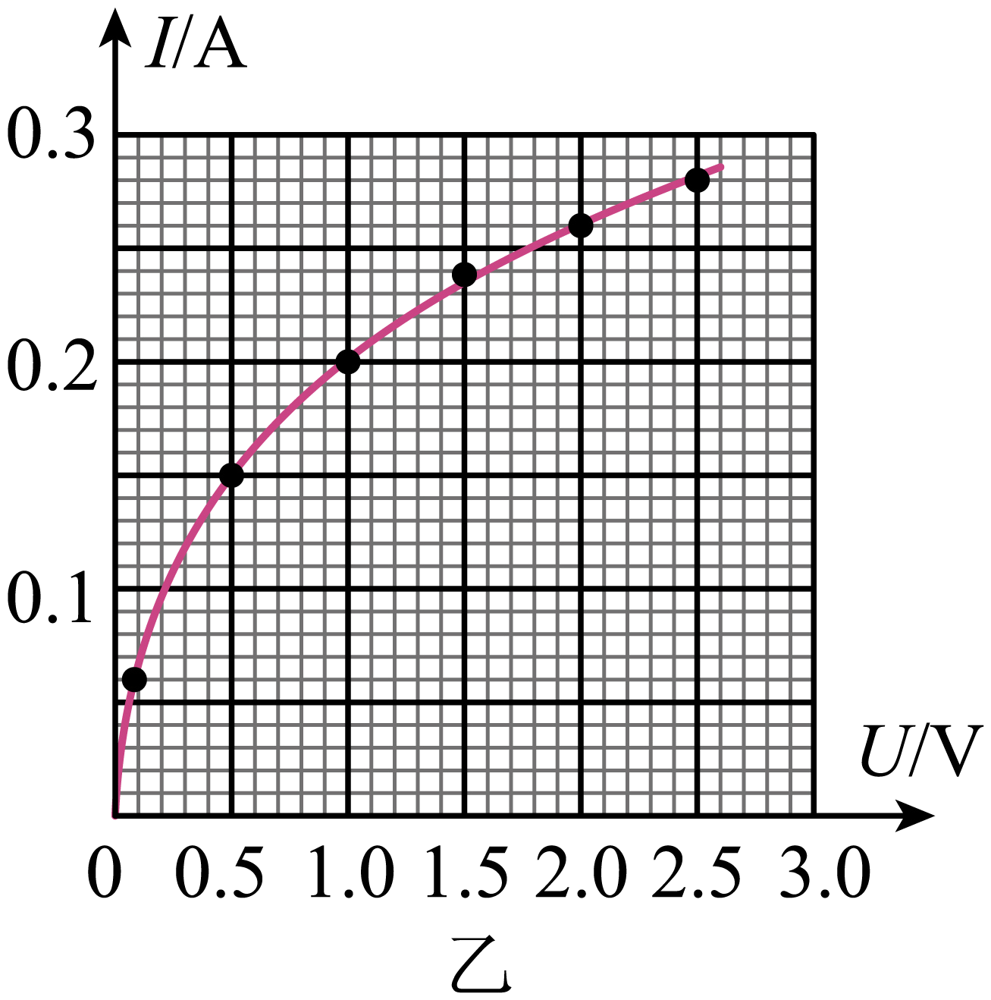
【答案】（1）
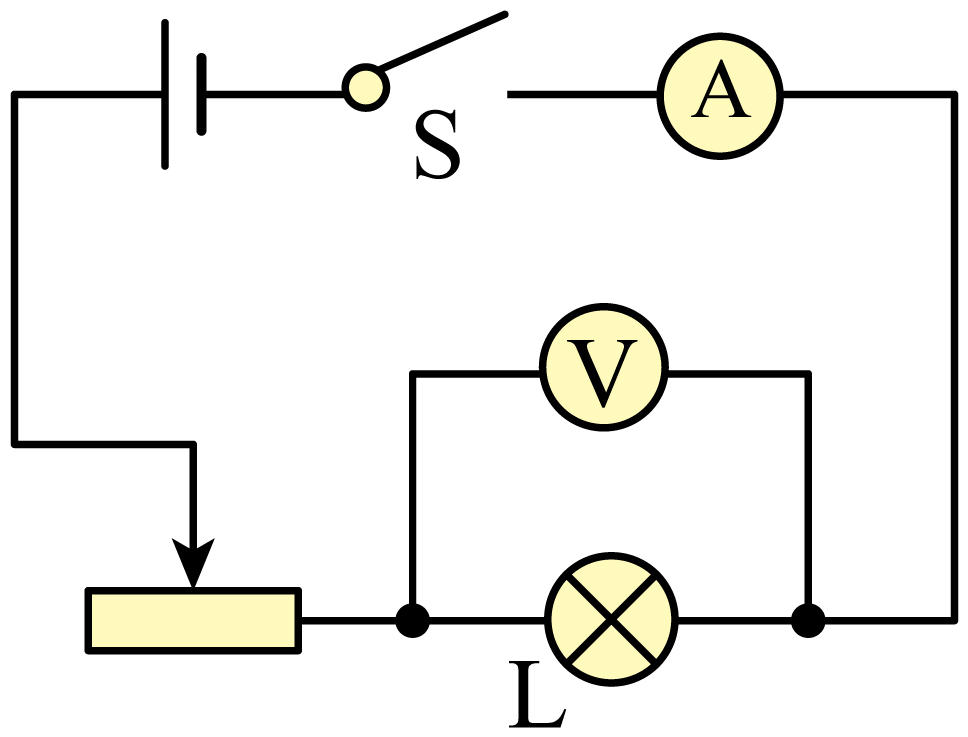
；（2）；（3）【解析】
【详解】解：（1）由实物图可知，灯泡与滑动变阻器串联，滑动变阻滑片向右移动时，接入电路的阻值变小，电压表测灯泡两端电压，电流表测电路中，电路图如下图所示：
（2）由图像可知小灯泡两端电压U=1.0V时，通过小灯泡的电流I=0.2A，此时小灯泡的电阻
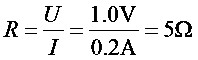
（3）小灯泡正常发光时，两端电压，由图像可知此时通过小灯泡的电流
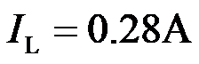
，小灯泡正常发光时的电功率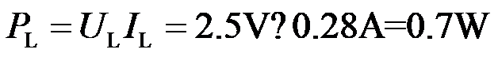
答：（1） ；
（2）小灯泡两端电压为1.0V时的电阻为5Ω；
（3）小灯泡正常发光时的电功率为0.7W。
28. 某科技小组的同学想制作一个简易浮力秤来测质量。他们剪掉空塑料瓶的瓶底，旋紧瓶盖，在瓶盖上系一块质量适当的石块，然后将其倒置在水桶里，当瓶中不放被测物体静止时，在瓶上与水面相平位置标记为零刻度线，再在瓶身上均匀标记其他刻度线，左侧标记的是长度值，若在刻度线右侧标上相应的质量值，即可做成一个简易浮力秤，如图所示。已知零刻度线以上瓶身粗细均匀，其横截面积为50cm2，不放被测物体时浮力秤的总质量为170g，水的密度为1.0g/cm3，g取10N/kg。
（1）画出图中浮力秤的受力示意图。
（2）求图中所示状态浮力秤受到的浮力。
（3）求浮力秤上2cm刻度线对应的质量值。
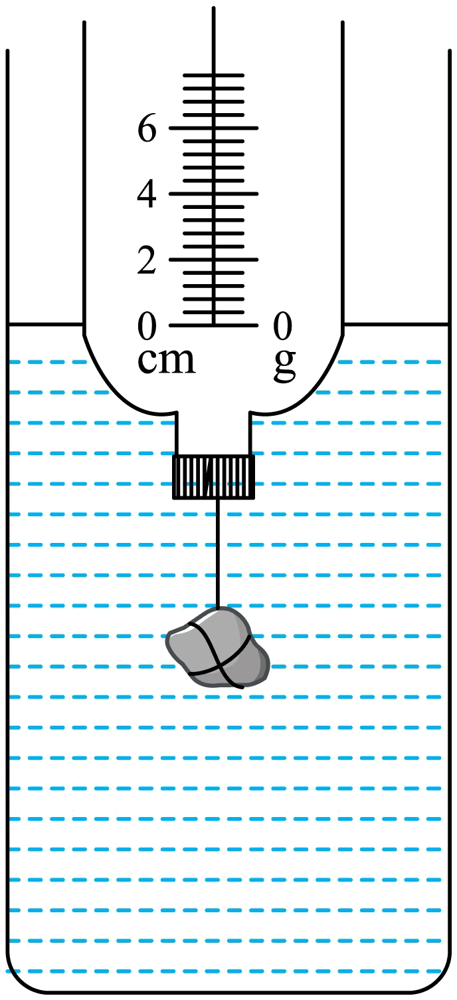
【答案】（1）见解析；（2）1.7N；（3）100g
【解析】
【详解】（1）浮力秤静止时漂浮，浮力秤所受的重力等于所受的浮力，浮力秤受力示意图见图：
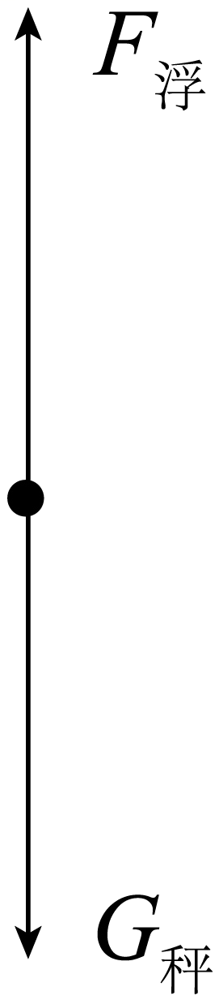
（2）浮力秤漂浮，依据平衡条件可知
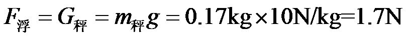
（3）浮力秤浸到2cm刻度线漂浮时，秤内被测物的质量为m测，依据平衡条件不放入被测物时F浮=G排
放入被测物时
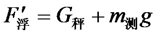
可知
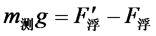
依据阿基米德原理
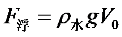
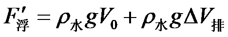
可知
答：（1）见解析；
（2）图中所示状态浮力秤受到的浮力为1.7N；
（3）浮力秤上2cm刻度线对应的质量值为100g。